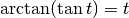
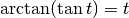
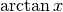
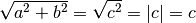
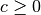
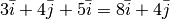
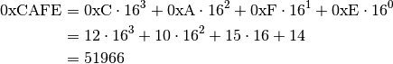
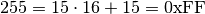

Math for Programmers¶
This tutorial contains practical math for programmers who want to get stuff done, as well as explanation chapters for those who get interested in how the math works.
Basics and Explanations¶
This tutorial assumes that you know most things shown in the basics page. If you don’t, that’s not a problem at all and you can just keep the basics page open while you read the tutorial.
I explain how most things work here, but if I don’t explain or prove something you’ll probably find it in the separate explanation chapter.
Functions¶
Here’s a typical math function:


There is no special syntax for defining a function. All we have is the equal sign, and when defining a function we just say that its value at x is equal to something.
If you’re familiar with a functional programming language like Haskell, then you’ll probably realize that the above math looks a lot like this Haskell session:
Prelude> let f x = 2*x
Prelude> f 6
12
Prelude>
If you’re feeling like WTF is this, here’s a Python session that should make everything clear.
>>> def f(x):
... return 2*x
...
>>> f(6)
12
Quick note about f(x) versus f x: if you define your own function
called  or
or  you should use
you should use  , but you can use some “special”
functions like
, but you can use some “special”
functions like  or
or  for historical reasons.
for historical reasons.
Also note that mathematicians prefer single-letter variable names because math was originally written on paper, and writing long things by hand sucks. Again, this doesn’t apply to the “special” functions.
Trig (aka trigonometry) with the Unit Circle¶
Problem
A player moves to top-right at the angle of 60° measured from the x axis at 10 pixels per second. How many pixels should the player’s x and y change every second?
y
| O <-- the player
| /
| /
| / ) 60°
------------|--/-----------> x
| /
|
Note that the y axis goes up in math so higher means bigger, but in programming it’s usually upside down.
Our problem has something to do with sine and cosine. The unit circle is a circle with radius 1 placed in the middle of the xy plane. Here’s a picture that shows what sine and cosine are:

This is really quite simple: the x coordinate is  and the y
coordinate is
and the y
coordinate is  . But the radius of the unit circle is 1 instead
of our 10, so we need to multiply everything by 10 to scale it up. We get this:
. But the radius of the unit circle is 1 instead
of our 10, so we need to multiply everything by 10 to scale it up. We get this:
player.x += 10*cos(60)
player.y += 10*sin(60)
Based on the unit circle,  should be somewhere between 0 and 1 since
the height of the x axis is 0 and the circle’s top is at 1 (the radius is 1).
But if we try this out in Python, something is wrong:
should be somewhere between 0 and 1 since
the height of the x axis is 0 and the circle’s top is at 1 (the radius is 1).
But if we try this out in Python, something is wrong:
>>> import math
>>> math.sin(60)
-0.3048106211022167
Now you’re feeling really WTF. The angles with negative sines should be below the x axis, e.g. something between 180° and 360°.
The problem is that Python, Haskell, C and most other programming languages use radians by default instead of degrees. Let’s convert 60° to radians so the sine function is happy:
>>> math.sin(math.radians(60))
0.8660254037844386
>>> math.cos(math.radians(60))
0.5000000000000001
That’s more like it. 0.5000000000000001 is obviously not an accurate
result, but it’s good enough for a programmer while a mathematician would say
that  and
and  . I might write
more about radians, how the heck I came up with those mathy-accurate values and
how my conversion functions work some day.
. I might write
more about radians, how the heck I came up with those mathy-accurate values and
how my conversion functions work some day.
Functions like  and
and  take radians as the argument, but also note
that some functions (like
take radians as the argument, but also note
that some functions (like atan2, see below) return radians.
Trig with a Triangle¶
Problem
A player moves 10 pixels up and 20 pixels right. What angle is that?
Here’s another way to define and , and another function called
 that we haven’t used before.
that we haven’t used before.


These things only work if the triangle has a 90° corner, and the little box at bottom right means that the corner is 90°. These definitions are compatible with the unit circle stuff above; see this.
So now we know that  and
and  . Let’s figure out how to calculate
. Let’s figure out how to calculate  from those:
from those:

Here  is the inverse of , so . Most
programming languages have an
is the inverse of , so . Most
programming languages have an atan(x) function that returns ,
but I don’t recommend using it in this case; the atan2(b,a) function
returns  and I recommend it instead.
and I recommend it instead. atan2 looks at the
signs of  and
and  and does the right thing if they’re negative (the player
is moving to e.g. bottom left). It also works if
and does the right thing if they’re negative (the player
is moving to e.g. bottom left). It also works if a is 0 and b/a would
fail as division by zero is undefined.
Note
Usually people like to put  before
before  in different kinds of places, but
in different kinds of places, but
atan2 is used like atan2(y_change, x_change), not like
atan2(x_change, y_change).
Finally, it’s time to calculate our stuff:
>>> from math import atan2, degrees
>>> degrees(atan2(10, 20))
26.56505117707799
Pythagorean Theorem¶
Problem: A player moves 10 pixels up and 20 pixels right, just like in the previous example. How many pixels is that in total, measured diagonally?
Here’s an image and a handy equation, also known as the Pythagorean theorem:

If you’re wondering how the heck it works see this proof.
Let’s solve  from the equation by applying
from the equation by applying  on both sides:
on both sides:

Here is the absolute value. The last step assumes , but that’s not a problem because a triangle with a negative side length doesn’t make much sense.
“Hypotenuse” is a fancy word that means the longest side of a triangle with a
90° angle, and that’s why some programming languages have a hypot(a, b)
function that returns  . I prefer using the square root thing
directly because most people don’t know what
. I prefer using the square root thing
directly because most people don’t know what hypot is.
Let’s calculate the distance:
>>> from math import hypot, sqrt
>>> hypot(10, 20)
22.360679774997898
>>> sqrt(10**2 + 20**2)
22.360679774997898
Vectors¶
A point is simply a pair of x and y coordinates, and a vector represents the
difference between two points. For example, if we have the points  and
and
 , the vector from A to B is
, the vector from A to B is
 . Here
. Here
 and
and  are vectors that go right and up by 1 unit, respectively.
are vectors that go right and up by 1 unit, respectively.

A vector like  can be also written as
can be also written as  . Use
whatever style you want.
. Use
whatever style you want.
We could also use vectors to do similar things as in the unit circle trig section. The advantage with vectors is that moving the player is really easy:
player.x += speed_vector.x
player.y += speed_vector.y
A disadvantage is that if we want to change the angle that the player moves at
by 1° we can’t just do moving_angle += 1. We’ll look into how this is done
below.
Another nice thing about vectors is that they can be +’ed together easily. For example, if we first move 3 units to right, then 4 units up and finally 5 more units to right, we move a total of 8 units to right and 4 units up. That’s how .
These vector calculations are just like the Pythagorean theorem and unit circle trig stuff above:


Example: if we move 1 unit to the right and 2 units up, our vector is  ,
its length is and the angle is
,
its length is and the angle is
 . On the other hand,
. On the other hand,  and
and  .
.
One way to change the angle of a vector is to first convert it to a length and an angle, change that angle and create a new vector. It looks like this in pseudo-ish code:
length = hypot(speed_vector.x, speed_vector.y)
angle = atan2(speed_vector.y, speed_vector.x) + angle_change
speed_vector.x = cos(angle) * length
speed_vector.y = sin(angle) * length
Hexadecimal Colors¶
You might have seen weird colors before, like #ff0000 is somehow magically
red or #0000ff is blue. This section is all about what the heck happens in
this color notation.
Let’s start with an example. If we have a number like 2017, it really means this:
The idea with hexadecimal is that instead of using 10 as a magic number we use 16. That’s why hexadecimal is also called base 16. But the problem is that we only have 10 digits, 0 to 9, so we borrow a few letters so that A=10, B=11, C=12, D=13, E=14 and F=15. For example:

Here 0x means heXadecimal. Mathematicians don’t use it, but I used it here because it’s very common in programming. Note that the first character is a zero, not the letter O.
The sane way to calculate the last step is to use a programming interpreter or calculator of your choice. Don’t try to do it by hand.
Most programming languages have very good support for hexadecimal and a few other bases. For example, here’s Python:
>>> 0xcafe
51966
>>> 0xc * 16**3 + 0xa * 16**2 + 0xf * 16 + 0xe
51966
>>> 12 * 16**3 + 10 * 16**2 + 15 * 16 + 14
51966
>>> hex(51966)
'0xcafe'
>>> int('cafe', 16)
51966
>>> 'i went to a %x' % 51966
'i went to a cafe'
>>> 'i went to a {:x}'.format(51966)
'i went to a cafe'
Now let’s have a look at the colors. Another common way to represent colors is
rgb(R,G,B) where R, G and B are red, green and blue values between
0 and 255. For example, rgb(255,0,0) is red because the red value is at
maximum and other values are 0. rgb(0,0,0) is black and
rgb(255,255,255) is white.
You might have noticed that and
, and that’s not just a random
coincidence. A color like #RRGGBB is actually rgb(RR,GG,BB) where
RR, GG and BB are hexadecimal. For example,
#ff0000 = rgb(0xff,0x00,0x00) = rgb(255,0,0).
Here’s a Python program that converts RGB colors to hexadecimal and back:
def hex2rgb(hexcolor):
assert len(hexcolor) == 7 and hexcolor[0] == '#'
return (int(hexcolor[1:3], 16), int(hexcolor[3:5], 16), int(hexcolor[5:7], 16))
def rgb2hex(r, g, b):
# string formatting magic: %02x means hexadecimal padded with
# zeros until it's at least 2 characters wide
return '#%02x%02x%02x' % (r, g, b)
And here’s a usage example:
>>> hex2rgb('#ff00ff')
(255, 0, 255)
>>> rgb2hex(255, 0, 255)
'#ff00ff'
Note that most color parsers support specifying colors so that e.g. #f0f
and #fff000fff are equivalent to #ff00ff, but the above program doesn’t
support that.